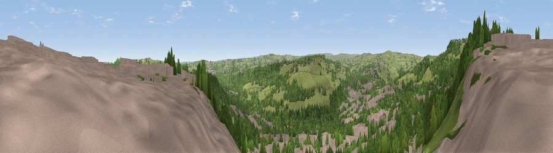

Viewpoint near Sowerby Bridge
#22611 in England · top 41% of its area beats it · near Sowerby BridgeThe view, rendered

A 360° render of this exact spot computed from the terrain model, tree cover and land cover — summer colours, afternoon light, calibrated against photographs of famous viewpoints. Real trees, hedges and buildings will differ in detail.
The panorama
Grey silhouette: terrain skyline in each direction (720 bearings, Earth curvature and refraction included). Dashed green: skyline with trees (+15 m) and buildings (+8 m) as obstacles. Blue strip: how far the ground is visible on each bearing.
Where the view opens
Wedge length = distance to the farthest visible ground on that bearing (vegetation-aware). Rings at 10, 25 and 50 km.
What fills the view
45% woodland · 31% built-up · 24% grassland
Angular shares of the visible panorama (visual magnitude), not map area. Landscape diversity 0.47 (0–1 Shannon).
Key numbers
More beautiful places nearby
The staircase of upgrades: each row has a higher view potential than everything closer. Driving times are estimates from straight-line distance, calibrated against real road routing — check an actual route before setting out.
| Place | Direction | Drive | Score |
|---|---|---|---|
| Viewpoint near Bank Top | E · 3 km | ~7 min | 62.6 |
| Viewpoint near Stump Cross | NE · 3 km | ~8 min | 67.8 |
| Viewpoint near Stump Cross | NNE · 3 km | ~8 min | 71.5 |
| Viewpoint near Shaw | SW · 20 km | ~34 min | 72.9 |
| Viewpoint near Jackson Bridge | SSE · 20 km | ~34 min | 73.5 |
| Viewpoint near Greenfield | SSW · 23 km | ~38 min | 76.0 |
| Viewpoint near Otley | NNE · 23 km | ~39 min | 77.5 |
| Darwen Hill | W · 39 km | ~59 min | 80.7 |
53.71709, -1.89124 · source: screening · position refined by local search. Computed location — check access rights before visiting.